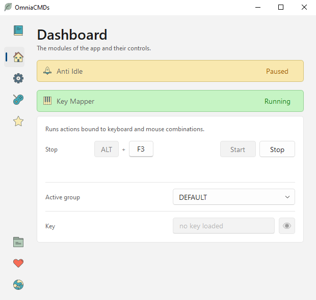
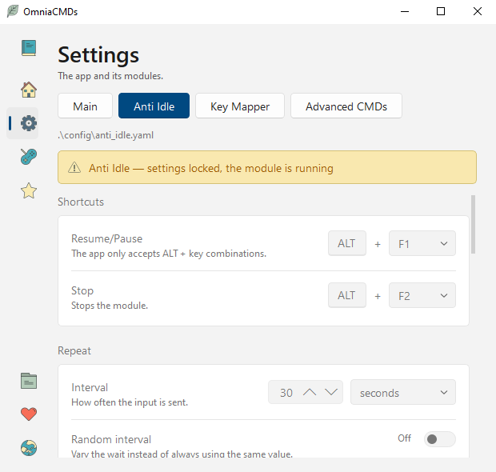
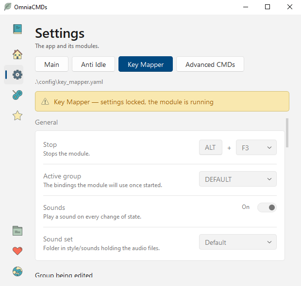
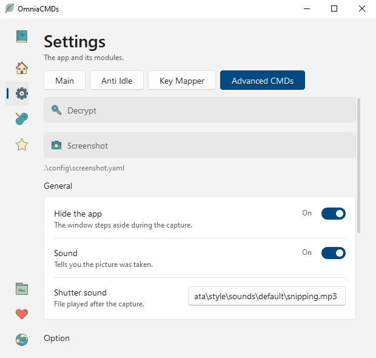
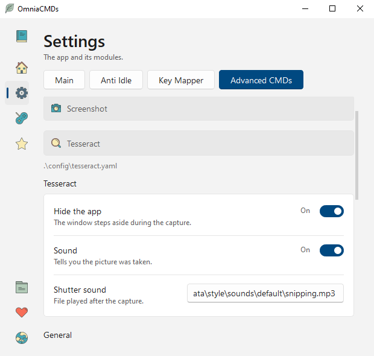
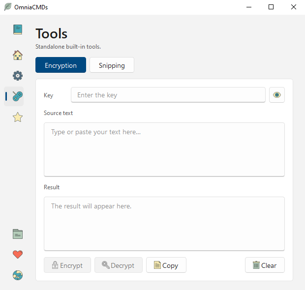
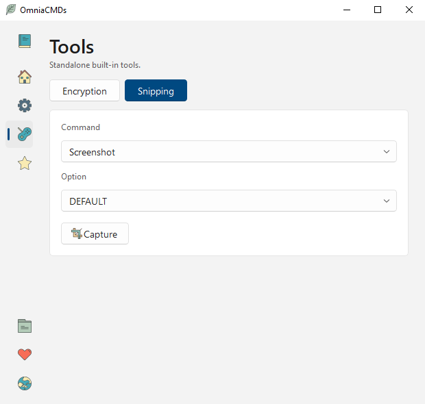
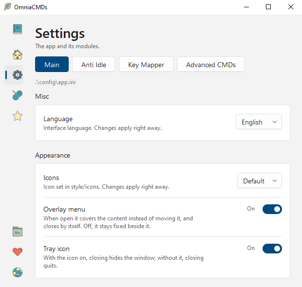

Getting started
OmniaCMDs is built around two modules — Anti Idle and Key Mapper — and two tools — Encryption and Snipping. The modules do the work; the tools give three of the commands a page of their own, where you can use them by hand.
Everything a module or a tool performs is an internal command: typing a text, pressing a shortcut, writing the time, reading the screen. The commands are the same for both modules, which is why learning one teaches you the other.
The app has four pages, listed down the left side.
- Dashboard — start and stop the modules.
- Settings — the app itself, the two modules, and the advanced commands.
- Tools — Encryption and Snipping, to use by hand.
- About — version, licence and links.

A module has to be stopped before its settings can be changed, and the app refuses to close while one is running. Stop it from the Dashboard first.
Nothing is installed and nothing is written outside the app's own folder, so it runs
from a USB stick as well as from C:\.
The Dashboard
One card per module. The strip at the top carries the module's name and its state: Stopped, Running or Paused. Clicking the strip folds the card away, which is handy once everything is set up.
Inside the card you find the shortcuts the module listens for, so you never have to go looking for them, and the buttons that start and stop it.
The Key Mapper card has two more rows:
- Active group — the set of mappings in use. You can change it while the module runs and the change takes effect immediately.
- Key — the password for the
decryptcommand, asked once, when the module starts. The eye button shows what you are typing. The field is cleared afterwards and tells you whether a key was loaded; the key itself is kept in memory only, never written anywhere.
Buttons on this page are silent on purpose. Sounds belong to the keyboard shortcuts, so you are not startled by your own clicking.
Anti Idle
Anti Idle repeats a list of actions at a set interval, so a session is never considered idle. Set it in Settings › Anti Idle.

Shortcuts
Two ALT combinations control the module while it runs: one pauses and resumes it, the other stops it. They work anywhere, so you never have to come back to the window.
Repetition
The interval is how long the module waits after finishing the list before starting again. With Random interval on, each wait is a random amount up to that value, which looks less mechanical than a fixed beat.
Windows to watch
Leave the list empty and the module always acts. Add window titles and it acts only while one of them is in front — useful when the session you want to keep awake is a remote desktop and you want to type in other apps in peace.
Title check decides how a title is compared: exact name matches the last part of the title, after the final dash, which is where most programs put their own name; contains matches anywhere in the title.
Actions
The list runs top to bottom, then the module waits and starts again. Each row is an
internal command — see Internal commands. Anti Idle offers the
five that make sense for a list that repeats: text, shortcut,
clock, load and mouse.
Waits
Three of them: between characters and between lines, for text that is typed, and between one action and the next. With Fast typing on, text appears at once and the two typing waits are ignored.
While a long text is being typed, a left click stops it. The module carries on with the rest of the list.
Key Mapper
Key Mapper listens for ALT + a key and for four mouse buttons, and runs the command bound to them. Set it in Settings › Key Mapper.

Groups
A group is a complete set of mappings — one per application, or one per customer, however you like to work.
The active group is the one the module loads when it starts. The group shown is the one you are editing, which lets you prepare a set without disturbing the one in use. While the module runs you can switch the active group from the Dashboard.
The group called DEFAULT cannot be renamed or deleted. Any other group can, with the two buttons next to the picker.
Mouse
Five bindings, fixed:
| Button | What it is |
|---|---|
MB3 | a short middle click |
MB3-1 | a middle click held up to a second |
MB3-2 | a middle click held longer |
X1 | the first side button |
X2 | the second side button |
Keyboard
Any number of ALT combinations, added with the button at the bottom of the list. A row whose key is set to none is ignored and is not written to the file, so you can leave one ready for later.
Waits
The same as Anti Idle, for the text a command types, and a left click stops a long one.
ALT is released only for the combinations the module listens for. Everything else, ALT + TAB included, reaches Windows untouched.
Internal commands
Everything the app performs is an internal command. Most are shared between the two modules; three are marked advanced because they carry enough settings of their own to deserve a page in Settings and a tool with its own interface.
| Command | What it does | Anti Idle | Key Mapper | Type |
|---|---|---|---|---|
text | Types the text you wrote | ✔ | ✔ | normal |
shortcut | Presses a key combination | ✔ | ✔ | normal |
clock | Types the date and time | ✔ | ✔ | normal |
load | Types the contents of a text file | ✔ | ✔ | normal |
start | Opens a file with the program Windows uses for it | ✔ | normal | |
clipboard | Types whatever is in the clipboard | ✔ | normal | |
mouse | Moves the pointer a little | ✔ | normal | |
decrypt | Types a text that is stored encrypted | ✔ | advanced | |
screenshot | Captures the screen and saves an image | ✔ | advanced | |
tesseract | Captures the screen, reads the text, copies it | ✔ | advanced |
A mapping whose command is none does nothing: it is a binding kept for
later, and it is not written to the file.
What each one takes
text— the text to type, on one line, with escapes for line breaks and tabs.shortcut— a combination such asctrl+vorctrl+shift+esc, written the way the keyboard library names its keys.clock— a time format, see below.loadandstart— a path to a file. A path that starts with.\is relative to the app folder, which keeps the whole thing portable.decrypt— the encrypted text, as the Encryption tool produced it.screenshotandtesseract— which option to use, among those defined in Settings.clipboardandmouse— nothing.
Escapes in text
A text field is a single line, so line breaks and tabs are written with a backslash.
This applies to text and to the format of clock; everywhere
else, including paths, a backslash is just a backslash.
| You write | You get |
|---|---|
\n | a new line |
\t | a tab |
\\ | a backslash |
Time formats
The clock command passes your format straight to Python's
strftime. Codes it knows are replaced, anything else is copied as it is — so
a format with a mistake in it prints the mistake rather than failing.
%Y-%m-%d_%H:%M:%S 2026-11-01_14:22:05
%d/%m/%Y %H:%M 01/11/2026 14:22
%H:%M\n 14:22 and a new lineWhen something is wrong
The app does not check your settings before running them. A command that cannot do its job either does nothing or types a message where you are typing, so you can see it and fix it.
| What happened | What you see |
|---|---|
| The clipboard is empty | KM_MODULE_NO_TEXT_IN_CLIPBOARD |
| Wrong key, or the encrypted text is damaged | KM_MODULE_DECRYPT_FAILED |
| The file to load is not there | KM_MODULE_FILE_NOT_FOUND |
| The file cannot be read as text | KM_MODULE_FILE_NOT_READABLE |
| The shortcut names a key that does not exist | KM_MODULE_SHORTCUT_FAILED |
| Tesseract is not where the settings say | TESSERACT_COPY_FAILED_EXE_NOT_FOUND |
| Tesseract read nothing | TESSERACT_COPY_FAILED |
In Anti Idle the same messages start with AI_MODULE_. They are typed at
once, without the waits, so they never look like the text you were expecting.
Two cases stay silent, because there is nothing useful to say in the middle of your
typing: start with a file that is not there opens nothing, and a screenshot
whose folder does not exist is not saved.
Some mistakes cannot be detected at all. A shortcut that Windows accepts but no program listens for, or a Tesseract language pack that is not installed, produce no error: the first does nothing, the second reads the text badly. Read this page before blaming the app.
Screenshot
In Settings › Advanced CMDs › Screenshot. The same capture is on the Tools page, to use by hand.

General
Hide the app takes the window out of the way before the capture, so it is not in the picture. Turn it off if you want to capture the app itself.
Sound plays a file after the capture. If the file is not there, the capture is silent.
Options
An option is a named set of values, so one key can save to your desktop and another to a work folder. DEFAULT always exists and cannot be removed.
- Full screen — capture everything instead of choosing an area.
- Folder — where the images go. If it does not exist, nothing is saved.
- File name — added after the date.
Files are named with the moment they were taken, so they sort themselves:
2026-11-01_14-22-05_screenshot.png.
Choosing an area
The screen dims and the pointer becomes a cross. Drag to choose, release to confirm. Esc or the right button gives up.
Tesseract
In Settings › Advanced CMDs › Tesseract. It reads the text inside the area you choose and puts it in the clipboard.

Tesseract is a separate program and has to be installed first, together with the language packs you need.
General
- Language — the name of an installed language pack, such as
engorita. A name that is not installed raises no error; the reading is simply poor. - Parameters — passed to Tesseract as they are.
--psm 3 --oem 3suits most screens. - Executable — the full path to
tesseract.exe.
Options
Like Screenshot, a named set of values. Here they change the text after it is read: a leading and a trailing text, and a list of replacements applied in order — handy when a font makes Tesseract read 1 as l, or when every reading needs the same prefix.
Encryption
On the Tools page. Type a key and a text, press Encrypt, and copy the result
into a decrypt mapping.

The tool goes one step further than the command: decrypt only decrypts,
while here you can also encrypt, which is how you prepare a text to store.
One key serves a whole group, so every encrypted text in it must be made with the same key. The module asks for that key once, when it starts, and keeps it in memory only.
The method
Fernet — AES-128-CBC with an HMAC-SHA256 signature — with a key derived from the SHA-256 of your password, and base64 output. There is nothing to configure: the algorithm is fixed.
The password becomes a key through a single fast hash, with no salt. That is enough to keep a password out of a plain text file, not to protect it from someone who has the encrypted text and time to try millions of guesses.
Snipping
On the Tools page, the other half of the advanced commands.

Choose the command — screenshot or tesseract — and the option to use, then press Capture. What happens next is exactly what the matching key would do, which makes this page the place to test a setting before binding it.
Settings and sounds
Settings › Main holds the app itself.

- Language — English, Italian, Spanish. The change is immediate.
- Icons — an icon set from
data/style/icons. - Overlay menu — on, the side menu covers the page and closes itself; off, it stays open beside it.
- Tray icon — with it on, closing the window hides the app and you quit from the tray; with it off, closing the window quits.
Sounds
Each module has a sound set, a folder under data/style/sounds. A file is
named after the command it belongs to — text.mp3, clock.mp3,
stop.mp3 — and a missing file just means silence. To make your own set, copy
the folder and replace the files.
Sounds play when you use the keyboard shortcuts. Buttons in the app stay silent.
Configuration files
Everything lives in config/, next to the app. The files are YAML: plain
text, with comments. Editing them by hand is fine, and the app reads them again when you
press Restore.
config/
app.ini language, icons, menu, tray, window size
anti_idle.yaml the Anti Idle module
key_mapper.yaml the Key Mapper module, with its groups
screenshot.yaml the screenshot command
tesseract.yaml the tesseract commandThe Save and Restore banner appears as soon as a page differs from its file. Restore throws away your changes and reads the file again; nothing is written until you press Save.
Delete a file and the app writes a fresh one, with its comments, the next time it starts. That is the quickest way back from a setup you have broken.